În stînga este slide-ul din curs, în dreapta aceeași figură sau același tabel, calculat în browser din aceleași date. Butonul ▶ modifică parametrul pas cu pas; casetele „Exemplu rezolvat” refac calculul cu cifrele capitolului.
Prognoza ca învățare supervizată · Validare fără leakage · Modele liniare regularizate: ridge și lasso · Arbori, random forest și gradient boosting · Rețele neuronale · Aplicație: consumul de energie electrică față de Capitolul 4 · Intervale de prognoză · Modele locale și globale: inflația din România · Aplicații în finanțe: volatilitatea și semnul randamentelor · Studii de caz de referință: M4, M5 și Gu, Kelly și Xiu
Prognoza ca învățare supervizată
Exemplu rezolvat: un tabel de laguri pentru consumul de energie electrică
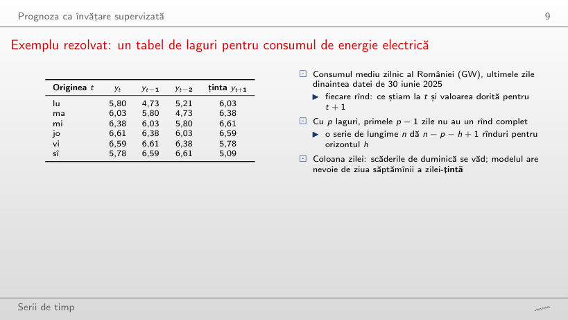
Exemplu rezolvat
Răspuns
9 − 5 − 3 + 1 = 2 rînduri, cu originile 25 și 26 iunie 2025. Pe toată seria, tabelul pentru h = 3 are 1642 − 28 − 3 + 1 = 1612 rînduri.
Consumul de energie electrică: seria și trei variabile explicative
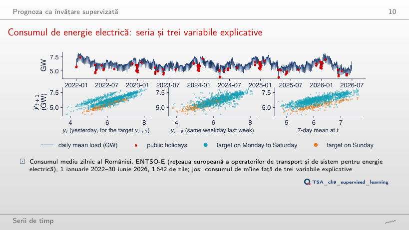
Răspuns
0,81 cu yt (0,77 la h = 1) și 0,60 cu media pe 7 zile (0,74 la h = 1). La h = 7 ziua de azi este aceeași zi a săptămînii ca ținta, deci yt preia rolul lagului săptămînal, iar media pe 7 zile nu mai poartă ziua săptămînii.
Prognoze recursive, directe și cu ieșiri multiple
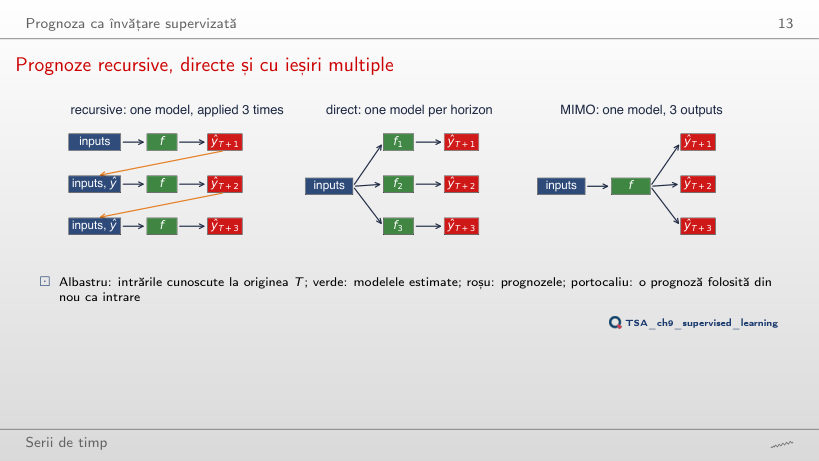
Răspuns
Cea directă: 668 MW, față de 898 MW pentru cea recursivă. La h = 7 coeficientul direct al lui yT este 0,81, iar cel implicit b⁷ doar 0,15: iterarea unui AR(1) pierde tiparul săptămînal, pe care modelul direct îl păstrează.
Exemplu rezolvat: prognoze recursive și directe pe doi pași
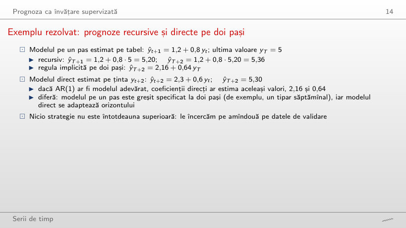
Exemplu rezolvat
Răspuns
Cea recursivă: 2,16 + 0,64·7 = 6,64, față de 2,3 + 0,6·7 = 6,50 pentru cea directă. Cele două reguli se intersectează la yT = 3,5; peste acest prag regula recursivă, cu panta mai mare, dă mereu mai mult.
Validare fără leakage
Patru scheme de validare
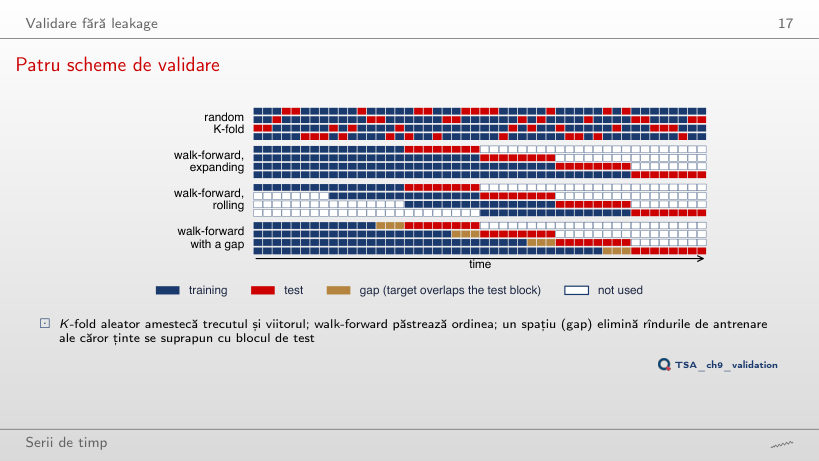
Răspuns
63% (25% la h = 3); în K-fold aleator 100%, cu spațiu 0%. Primele h − 1 = 5 dintre cele 8 rînduri ale fiecărui bloc de test au ținte care se suprapun cu ultimele rînduri de antrenare.
Leakage-ul în practică: grupuri aleatoare pe ținte suprapuse
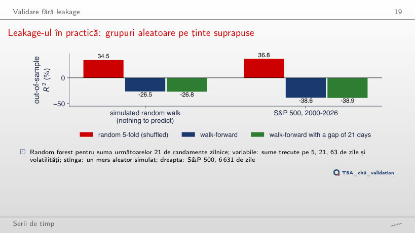
Răspuns
−4,5%, aproape de walk-forward (−6,3%) și de walk-forward cu spațiu (−6,1%). Fără ținte suprapuse, un rînd de test nu mai are aproape-copii în grupurile de antrenare, iar R² de 34,5% dispare.
Interpretarea experimentului de leakage
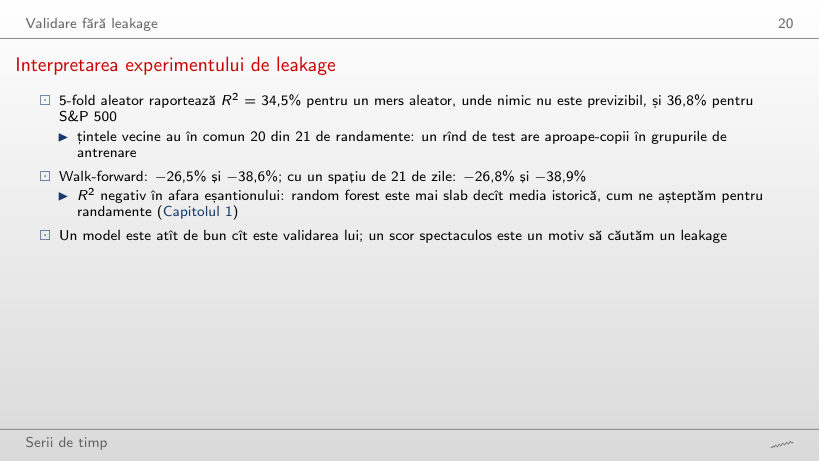
Exemplu rezolvat
Răspuns
43,4% și −43,6%. Țintele vecine au în comun 62 din 63 de randamente (corelația de selecție 0,976), deci grupurile aleatoare scurg și mai multă informație. Fără spațiu, walk-forward dă −36,2%: ultimele rînduri de antrenare au ținte care se suprapun cu primele rînduri de test, un leakage mic pe care spațiul îl elimină.
Deplasarea și varianța arborilor de regresie
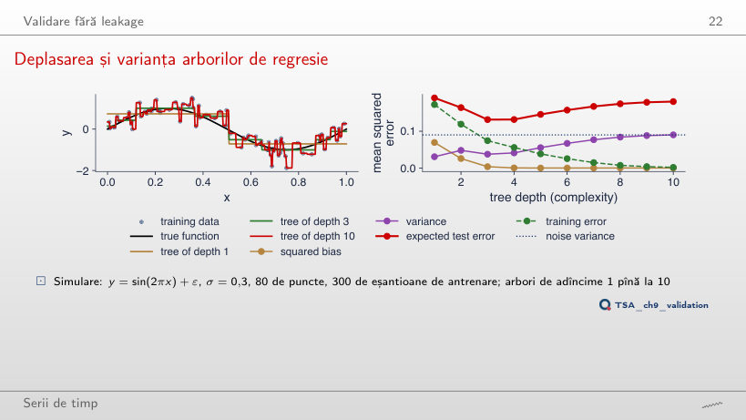
Răspuns
La adîncimea 2 (0,465; varianța zgomotului este 0,36). Cu σ = 0,1 minimul trece la adîncimea 6. Mai mult zgomot crește varianța arborilor adînci, deci complexitatea potrivită scade.
Modele liniare regularizate: ridge și lasso
Ridge și lasso
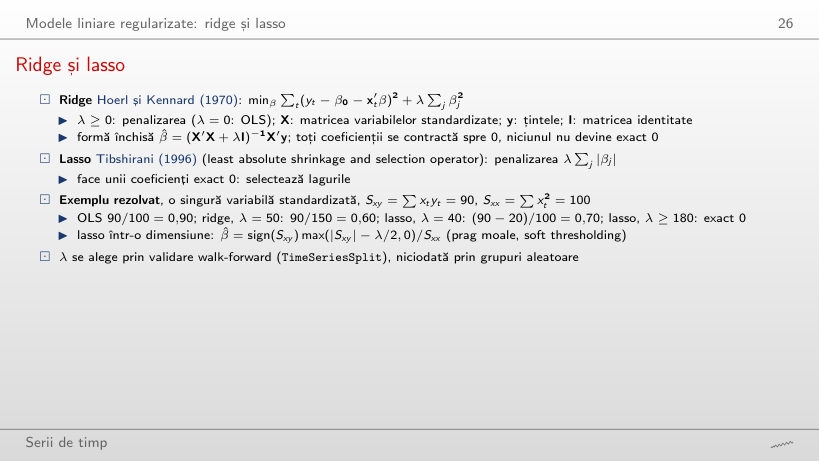
Exemplu rezolvat: ridge
Exemplu rezolvat: lasso
Răspuns
De la λ = 2·30 = 60; ridge dă 30/150 = 0,200, nenul. Pragul lasso crește cu |Sxy|: variabilele cu o legătură slabă cu ținta ies primele.
Traiectoriile ridge și lasso pentru variabilele consumului
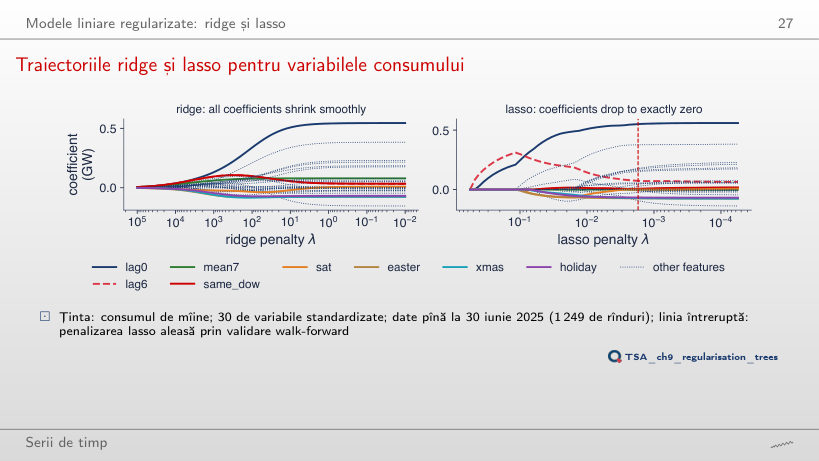
Răspuns
23 din 30 (22 pe datele pînă la 30 iunie 2025), pe 702 rînduri, cu λ = 0,00486; primele variabile care intră sînt tot lag6, lag0 și lag13.
Interpretarea traiectoriilor coeficienților
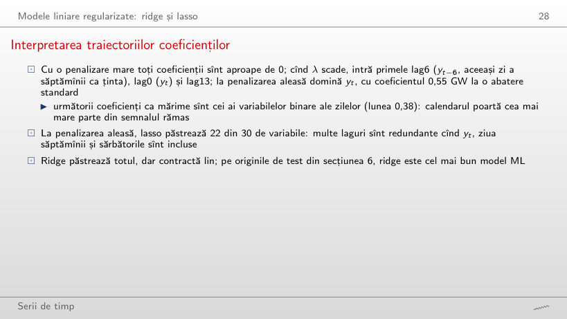
Răspuns
19 din 30, la λ = 0,00441 (22 la λ ales, 0,00173). Ordinea de intrare nu depinde de λ ales: lag6, lag0, lag13.
Arbori, random forest și gradient boosting
Un arbore de adîncime 2 pentru consumul de mîine
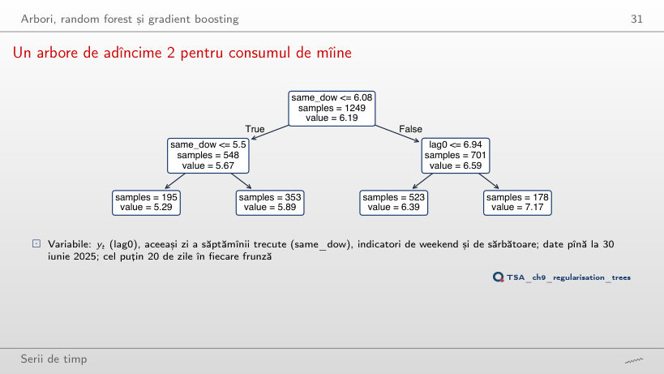
Răspuns
Variabila rămîne same_dow, iar pragul coboară de la 6,08 la 6,04 GW; frunzele devin 5,27; 5,86; 6,37 și 7,17 GW, cu 1613 zile, iar R² rămîne 0,64.
Gradient boosting
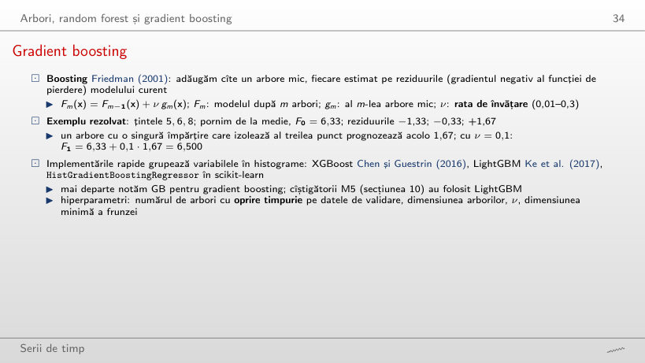
Exemplu rezolvat
Răspuns
5,50; 5,50 și 8,00: primul arbore corectează complet reziduul punctului izolat, iar MSE la antrenare scade de la 1,56 la 0,167 după un singur arbore. O rată de învățare mare ajustează repede datele de antrenare, inclusiv zgomotul lor.
Un arbore, un random forest și boosting pe datele de consum
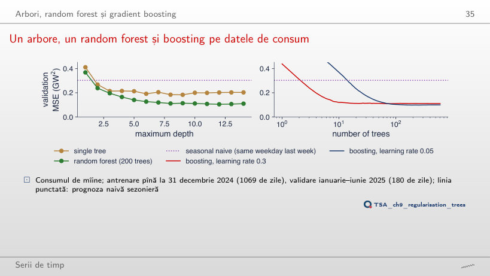
Răspuns
După 24 de arbori (MSE 0,093), față de 72 în curs; cu ν = 0,05 minimul vine după 222 de arbori (0,092). Pe un eșantion de antrenare mai scurt, boosting-ul rapid începe mai devreme să ajusteze zgomotul.
Arborii nu pot extrapola: nivelul prețurilor în România
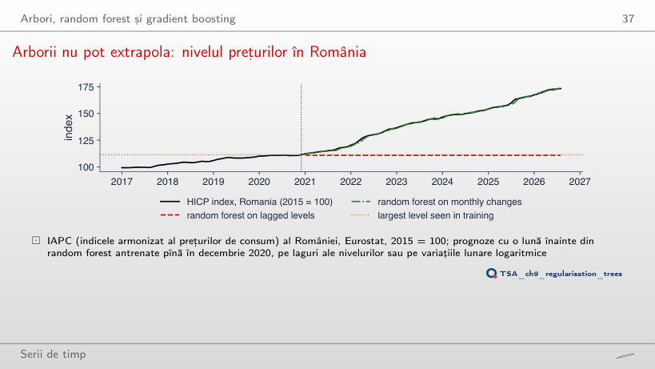
Răspuns
22,9 puncte de indice (36,9 cu antrenarea pînă în 2020): cel mai mare nivel văzut este acum 135,6, dar prognoza rămîne plafonată la 134,1, cînd indicele ajunge la 173,4. Pe variațiile lunare RMSE este 0,68.
Importanța prin permutare pentru gradient boosting
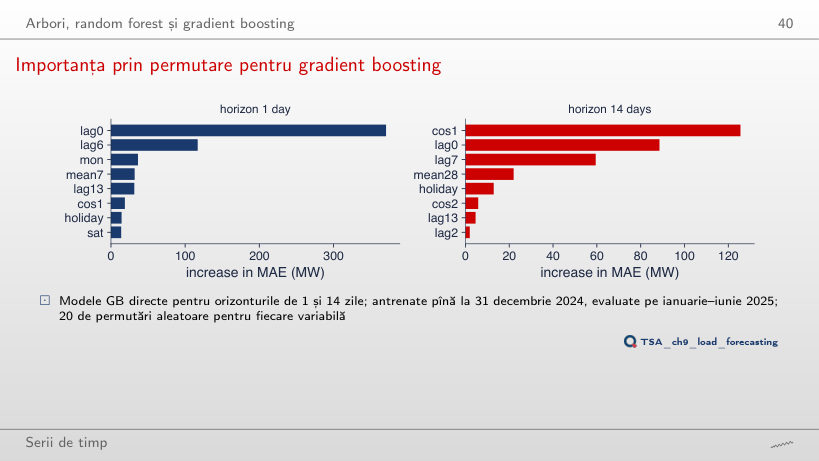
Răspuns
cos1 (+98 MW), urmată de lag6 (+84 MW). La h = 7 domină încă lag0 (+317 MW), pentru că la 7 zile yt este aceeași zi a săptămînii ca ținta.
Rețele neuronale
O rețea mică și funcțiile ei de activare
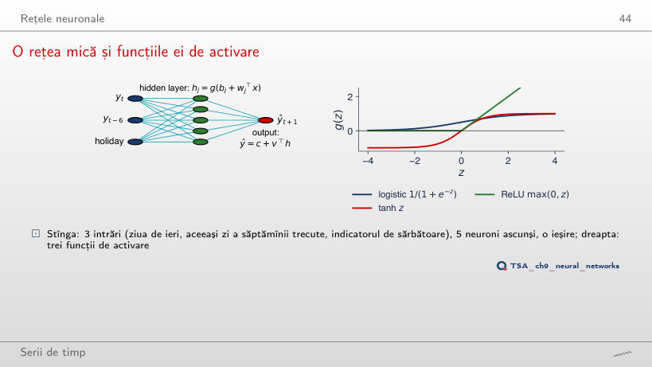
Răspuns
3·10 + 10 + 10 + 1 = 51. Cu 10 neuroni ReLU, funcția liniară pe porțiuni aproximează tanh cu eroarea maximă 0,048, față de 0,102 cu 5.
O rețea recurentă și celula LSTM
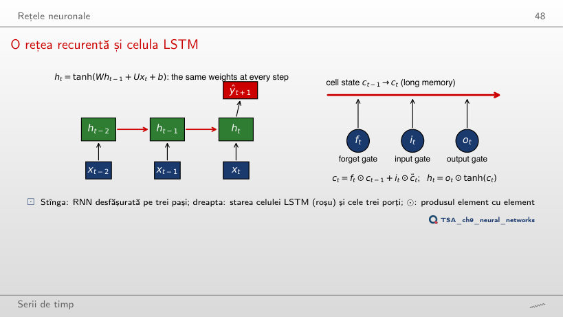
Răspuns
661 MW față de 344 MW. LSTM nu vede indicatorul de sărbătoare și repetă tiparul săptămînal peste Paște, deși pierderea la antrenare scade de la 0,951 la 0,210.
Aplicație: consumul de energie electrică față de Capitolul 4
Exercițiul de prognoză
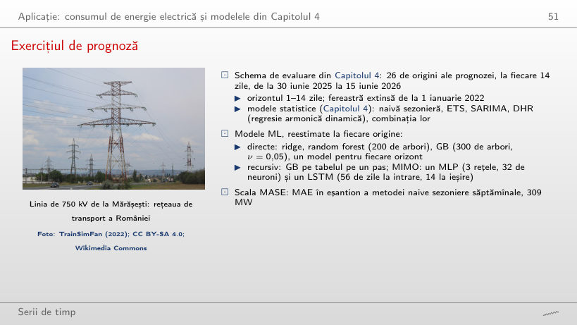
Exemplu rezolvat
Răspuns
Scala devine 371 MW și MASE 0,744 (309 MW și 0,894 cu m = 7). Diferențele de la o zi la alta sînt mai mari decît cele de la o săptămînă la alta, pentru că trecerea la weekend schimbă consumul; scala mută nivelul, nu ordinea modelelor.
Rezultatele: 26 de origini, 14 orizonturi
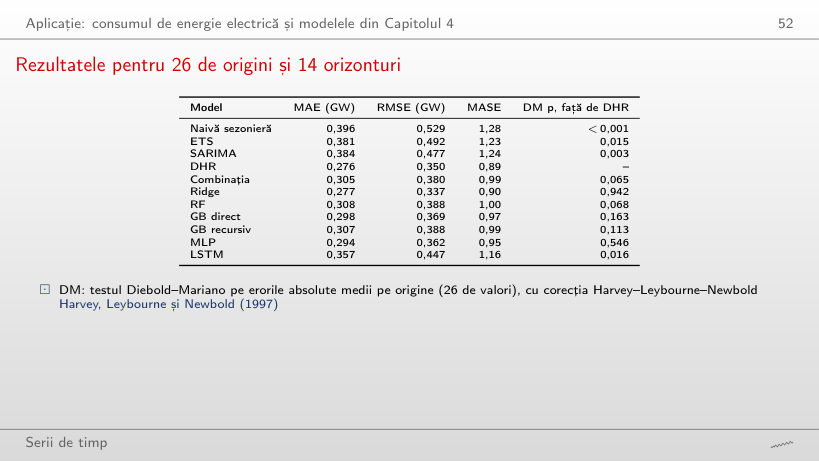
Răspuns
Da: pe 16 origini ridge are MASE 0,92 și DHR 0,93, iar DM p = 0,791. Nesemnificativ înseamnă că testul nu separă diferența de zgomot, nu că modelele sînt egale.
MASE și acuratețea pe orizonturi
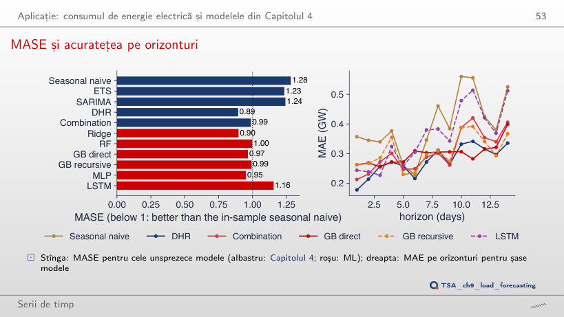
Răspuns
Tot DHR (0,83), urmat de ridge (0,86). LSTM are aici 0,95, dar pe toate cele 26 de origini urcă la 1,16.
Interpretarea rezultatelor pentru consum
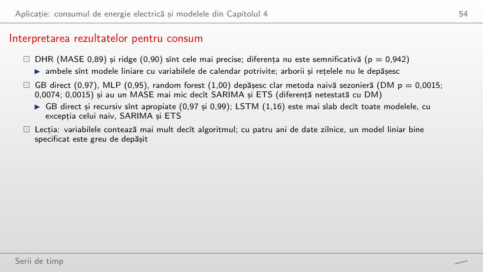
Exemplu rezolvat
Răspuns
0,953 (DM* = 0,060), față de 0,942 fără autocovarianțe: d̄ = 0,9 MW este mic față de abaterea sa standard, oricum ar fi estimată varianța.
Prognozele în jurul Paștelui ortodox din 2026
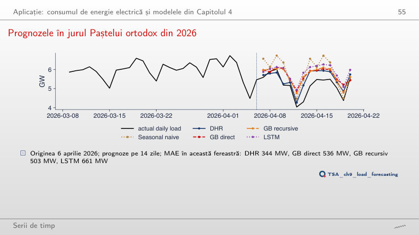
Răspuns
MLP, cu 255 MW; GB recursiv are 260, GB direct 276, naivul sezonier 283, DHR 286 și LSTM 398 MW. Fără Paște în fereastră, diferențele dintre modele sînt mici.
Intervale de prognoză
Regresia cuantilică și funcția de pierdere pinball
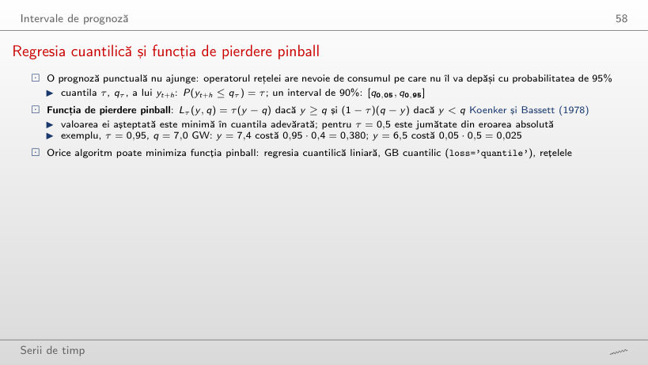
Exemplu rezolvat
Răspuns
0,200 și 0,250: cu τ = 0,5 pierderea este jumătate din eroarea absolută (0,4/2 și 0,5/2), iar minimul pierderii medii se mută la mediana celor 364 de valori.
Predicția conformală prin împărțire
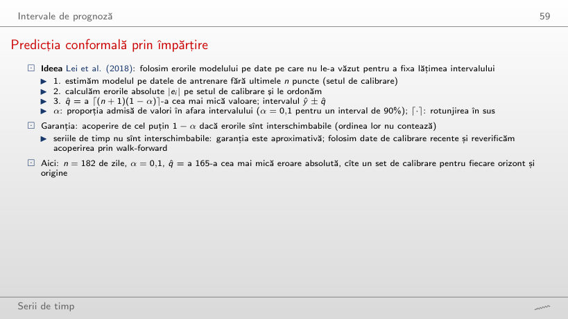
Exemplu rezolvat
Răspuns
k = ⌈183·0,5⌉ = 92 și q̂ = 175 MW pentru h = 1; acoperirea pe cele 364 de prognoze este 49,5%, cu lățimea medie 509 MW.
Intervale de 90% pentru consum
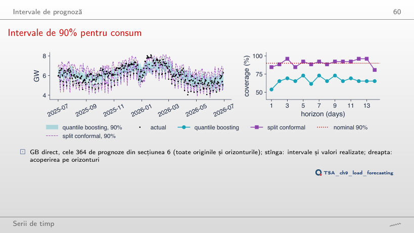
Răspuns
77,5%, cu lățimea medie 1000 MW: 13,7% dintre valori sînt sub interval și 8,8% deasupra. GB cuantilic rămîne la 66,5% pentru un nivel nominal de 90%.
Modele locale și globale: inflația din România
Inflația din România: prognoze și RMSE relativ
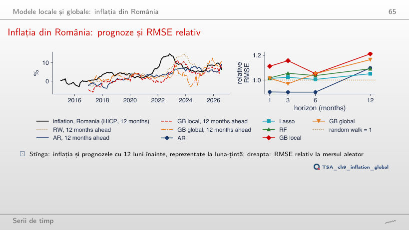
Răspuns
0,64 (1,21 pe toate originile), iar GB global are 1,19. Pe puținele origini ale perioadei de dezinflație de după vîrful din 2022, clasamentul de la 12 luni se inversează: o comparație pe cîteva zeci de erori este fragilă.
Rezultatele pentru inflație
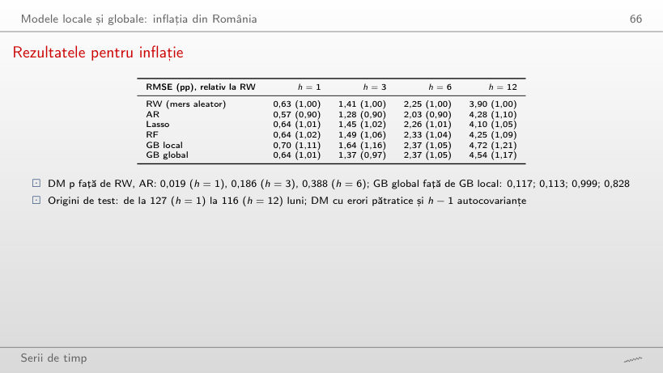
Răspuns
0,83 (0,88; 0,86; 0,83 și 0,98 la h = 1, 3, 6, 12): în anii cu inflație mare AR rămîne sub mersul aleator pînă la 6 luni, iar GB global are 1,10 la h = 6.
Aplicații în finanțe: volatilitatea și semnul randamentelor
Rezultatele: S&P 500 și DAX, 2013–2026
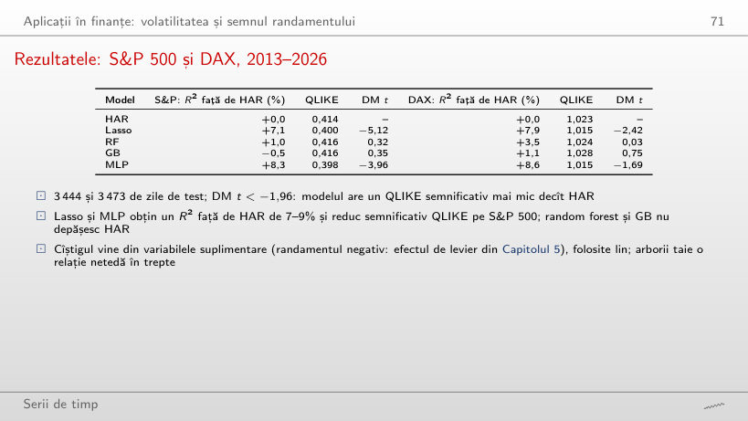
Răspuns
Da: R² față de HAR +7,4% și DM t = −3,42 pe 1682 de zile; MLP are +7,9% și t = −2,28.
Prognozele volatilității în două episoade de criză
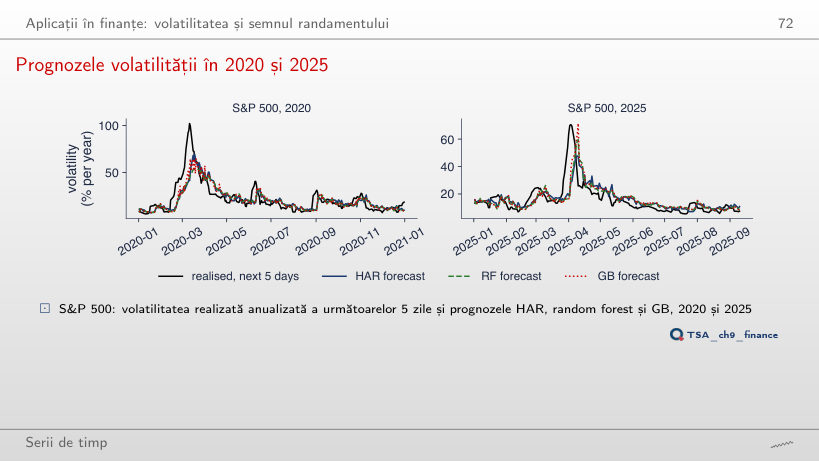
Răspuns
Da, amîndouă: QLIKE 1,536 (lasso) și 1,541 (MLP), față de 1,553 pentru HAR. În 2025 HAR are 0,990, sub amîndouă (0,997 și 1,002): un singur an nu decide clasamentul.
Semnul randamentului de mîine: reperul corect
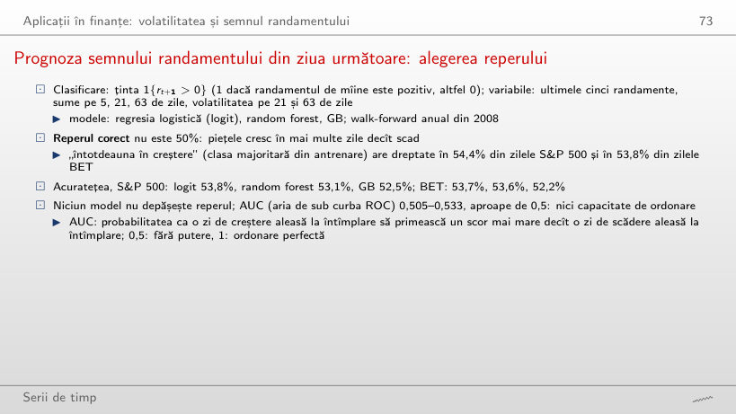
Răspuns
0,541, cel mai mic 0,507; zilele de creștere sînt 54,6% (S&P 500) și 55,7% (BET). AUC rămîne aproape de 0,5.
Acuratețea față de reper
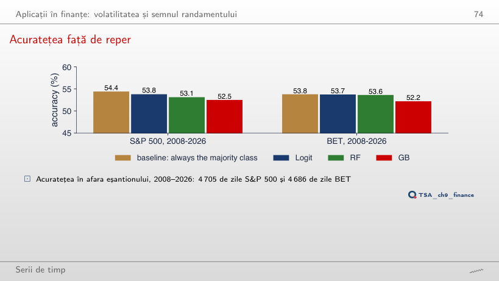
Răspuns
49,3%, sub reperul de 54,4%: cu pragul mai sus modelul prognozează „creștere” doar în 40,4% din zile, deși piața crește în 54,4% din ele.
Studii de caz de referință: M4, M5 și Gu, Kelly și Xiu
M4: acuratețea tuturor metodelor
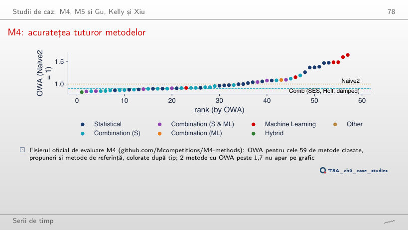
Răspuns
Pe locul 23 (OWA 0,926), față de 19; cîștigătorul rămîne metoda 118, hibridă, cu 0,839, iar cea mai bună metodă ML pură coboară pe locul 27.
Gu, Kelly și Xiu (2020): R² mic, valoare economică mare
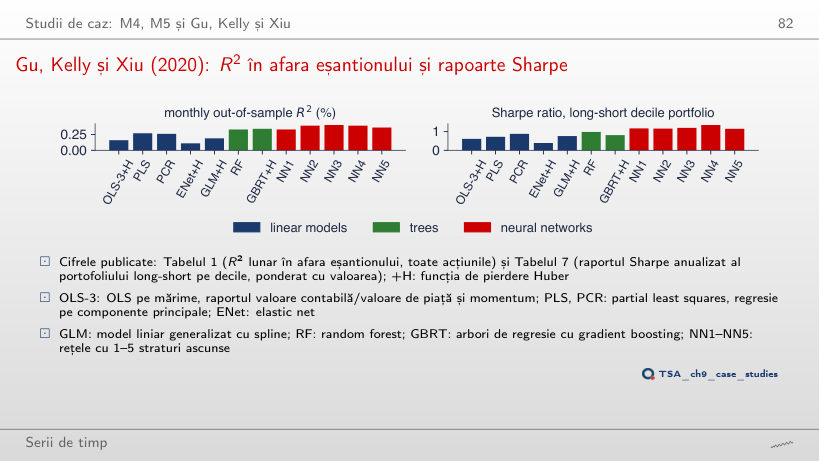
Răspuns
1,35/0,61 = 2,21 ori, cu un R² lunar de doar 0,39%: o predictibilitate mică, folosită pe mii de acțiuni și luni, susține un portofoliu valoros.
Consumul mediu zilnic de energie electrică al României (ENTSO-E, extrasul din Capitolul 4, 1 ianuarie 2022 – 30 iunie 2026). Prețurile zilnice S&P 500, DAX și BET (data/market, pînă la 18 septembrie 2026). Indicele IAPC al României (Eurostat prc_hicp_minr), citit cu funcția capitolului pe 4 noiembrie 2026 și tăiat la august 2026, ultima lună din slide-uri; reproduce exact cifrele din curs. Fișierul oficial de evaluare M4 (ch9_m4_owa.csv) și cifrele publicate de Gu, Kelly și Xiu (2020). Prognozele walk-forward ale modelelor (ch9_load_ml.csv, ch9_inflation.csv, ch4_load_cv.csv) și estimările care cer reantrenarea modelelor (random forest, gradient boosting, MLP, LSTM, lasso) sînt cele ale codului capitolului, cu aceeași sămînță; în browser se recalculează tabelele de laguri, corelațiile, arborii de regresie, MASE, testele Diebold–Mariano, acoperirea intervalelor, RMSE, QLIKE, acuratețea și AUC. Variantele care nu apar în curs (alt orizont, altă sămînță a eșantionului, alt sfîrșit al eșantionului, alt nivel al intervalului, alt prag) sînt rulări suplimentare ale codului capitolului, cu aceleași date și aceeași sămînță; modelele AR(1) ale blocului despre strategii și aproximarea lui tanh prin neuroni ReLU sînt calcule suplimentare, făcute în browser.